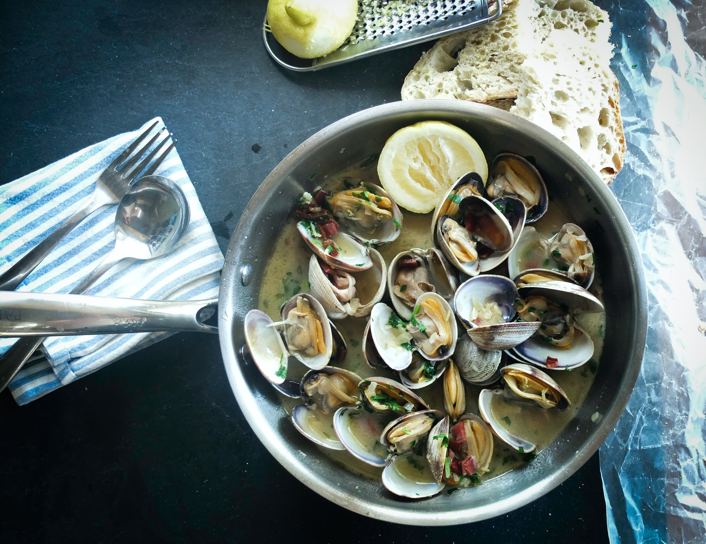

- Preperation time: 30 minutes
- Cook time: 8 minutes
- Wine suggestions: Trentino Nosiola
Parsley Scented Mussels
Serves 4
- 1lb 5oz/600g mussels
- 1lb 5oz/600g clams
- 2 tablespoons extra virgin olive oil
- 2 cloves of garlic, coarsely chopped
- 1 small bunch flat-leaf parsley coarsely chopped, plus extra to garnish
- Salt
Directions
- Wash the mussels a clams under cold water, then place them in a bowl of cold salted water and let
them degorge (to salt or be salted to extract moisture before cooking) for 30 minutes or in this case to get rid of the sand.
- Carefully clean the mussels with a small metal brush, then use tweezers to pull off the beards (the brown fibrous threads hanging
from the shells) and rinse thoroughly.
- Put the clams and mussels in a large pan and cook over high heat for 4-5 minutes until all the shells have opened. Discard any that don't open.
Strain the shellfish, reserving the cooking liquor, and set aside.
- Heat the oil in a pan, add the garlic and parsley and cook over medium heat for 2 minutes, then add clams and mussels and a little of the reserved
cooking liquid and cook for 6 minutes to allow the shellfish to absorb the flavors. Taste to check seasoning and add salt to taste.
Serve hot garnished with extra parsley.